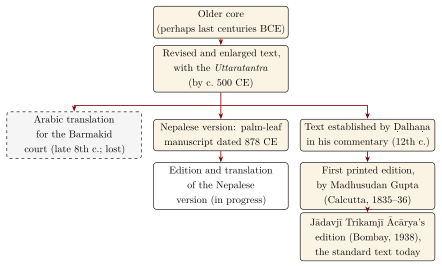
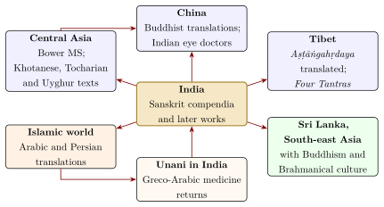

Chapter 5: Vāgbhaṭa and the Later Medical Literature¶
rāgādirogān satatānuṣaktān aśeṣakāyaprasṛtān aśeṣān
autsukyamohāratidāñ jaghāna yo ’pūrvavaidyāya namo ’stu tasmai
Homage to that unprecedented physician who destroyed all the diseases—passion and the rest—that cling constantly, pervade the whole body, and bring longing, delusion and discontent.
— Aṣṭāṅgahṛdaya, Sūtrasthāna 1.1
5.1 Vāgbhaṭa¶
The third member of the “great triad” is the work of Vāgbhaṭa, who lived in Sindh, probably around 600 CE (Meulenbeld 1999–2002). Two compendia bear his name: the Aṣṭāṅgasaṃgraha (“Compendium of the Eight Branches”), written in mixed prose and verse, and the shorter Aṣṭāṅgahṛdaya (“Heart of the Eight Branches”), written entirely in verse. The colophons of the Saṃgraha name its author as Vāgbhaṭa, son of Siṃhagupta and grandson of another Vāgbhaṭa. Whether the same man wrote both works, or whether the Hṛdaya is a later condensation by a namesake, has been long debated, and the question is not settled; the two texts are closely related, and many verses are shared.
The opening verse of the Hṛdaya, quoted above, praises an “unprecedented physician” who has destroyed passion, delusion and the other afflictions. The language of the verse—“passion and the rest” (rāgādi) are the defilements of Buddhist thought—has led many scholars to read it as an homage to the Buddha, and other passages of the Saṃgraha invoke Buddhist deities. Vāgbhaṭa was in all probability a Buddhist; but his work was accepted without difficulty by physicians of all communities, and it became the most widely used medical text in India.
5.1.1 The Two Compendia¶
Vāgbhaṭa’s aim was to bring together the teachings of Caraka and Suśruta, with additions from later practice, in a form that could be learnt and used. The Saṃgraha, of 150 chapters, is the fuller work; the Hṛdaya, of 120 chapters in six sections (Table 5.1), is concise, clear and memorable. Its verse form suited a tradition in which students learned texts by heart. A complete English translation of the Hṛdaya is available (Srikantha Murthy 2012), and Valiathan has summarised it for the general reader (Valiathan 2009).
| Section | Chapters | Subject |
|---|---|---|
| Sūtrasthāna | 30 | General principles; daily and seasonal regimen; foods and drinks; tastes; doṣas; drugs; procedures |
| Śārīrasthāna | 6 | Embryology, anatomy, constitution, prognosis |
| Nidānasthāna | 16 | Causes and signs of diseases |
| Cikitsāsthāna | 22 | Treatment of diseases |
| Kalpasiddhisthāna | 6 | Purification therapies: drugs, administration and complications |
| Uttarasthāna | 40 | Children and seizers; insanity and possession; eye, ear, nose, mouth and head; surgery; poisons; rejuvenation; virility |
| Total | 120 |
5.1.2 The Aṣṭāṅgasaṃgraha¶
The Saṃgraha is the larger and, in some respects, the more interesting of the two works. Its prose passages preserve discussions and explanations omitted from the Hṛdaya, and it quotes or paraphrases older authorities more extensively. It is more open about its religious context: it invokes the Buddha and Buddhist deities, and some of its prescriptions include Buddhist protective formulae. Like Vāgbhaṭa’s other work, it gives a place among the rejuvenating remedies to garlic, which brahmanical orthodoxy regarded as forbidden food but which the physicians valued highly—one of the texts of the Bower Manuscript is devoted to it (Section 1.7.1). The Saṃgraha was commented on by Indu in the Śaśilekhā. Because it is longer and less memorable, it was less widely studied than the Hṛdaya, but it is an important witness to the medicine of its time.
5.1.3 Character and Influence¶
The Hṛdaya’s Sūtrasthāna begins with the daily regimen—“a healthy person should rise at the hour of Brahmā to protect his life” (AH Sū. 2.1)—and continues with the seasons, the urges, the properties of foods and drinks, the protection of food from poison, the tastes, the doṣas and their subdivisions, and the principles of therapy. Its systematic arrangement made it the preferred textbook in many regions, above all in Kerala (Section 5.3).
The Hṛdaya was translated into Tibetan in the eleventh century, by the translator Rin chen bzang po and the Indian scholar Janārdana, and is preserved in the Tibetan Buddhist canon together with several commentaries. Its structure and much of its content are reflected in the Four Tantras (rGyud bzhi), the foundational text of Tibetan medicine, which also draws on other sources (Chapter 11). The principal commentaries on Vāgbhaṭa’s works are listed in Table 5.2.
| Commentary | Author and date | Notes |
|---|---|---|
| Padārthacandrikā | Candranandana (Kashmir; perhaps 10th century) | On the Hṛdaya; one of the oldest |
| Śaśilekhā | Indu | On the Saṃgraha |
| Sarvāṅgasundarā | Aruṇadatta (13th century) | On the Hṛdaya; widely studied |
| Āyurvedarasāyana | Hemādri (13th century) | On the Hṛdaya; survives in part |
5.1.4 The Contents of the Hṛdaya¶
A brief survey shows how Vāgbhaṭa reorganised the inherited material. The thirty chapters of the Sūtrasthāna move from the healthy person (regimen, seasons, urges, the prevention of disease) to foods and drinks, the protection of food against poison, the tastes, the doṣas, the classification of drugs, and then to the procedures of therapy: oleation and sudation, emesis and purgation, enemas, nasal treatment, smoking, gargles, eye treatments, bloodletting, the extraction of foreign bodies, alkali and cautery. The six chapters of the Śārīrasthāna treat embryology, the complications of pregnancy, the parts of the body, the vital points, constitution and signs of death. The Nidāna- and Cikitsāsthānas follow the order of diseases established by Caraka, starting with fever. The Kalpasiddhisthāna combines Caraka’s pharmaceutics of emetics and purgatives with the management of complications of purification. The forty chapters of the Uttarasthāna cover the remaining branches: children and their “seizers”, insanity and possession, the eye, ear, nose, mouth and head, wounds and fractures, fistulae and swellings, poisons and bites, and finally rejuvenation and virility.
In each area Vāgbhaṭa chooses, condenses and harmonises. He presents Suśruta’s surgery in abbreviated form, adds material from later practice—for example on the treatment of eye diseases—and gives a coherent theoretical framework throughout. It is this combination of completeness, order and brevity that explains the work’s success.
5.1.5 How the Commentators Worked¶
Much of what we know about the history of the classical texts comes from their commentators. A Sanskrit commentary explains difficult words, supplies the implied subject of terse statements, resolves apparent contradictions between passages, connects the text with other authorities, and often records alternative readings found in other manuscripts. Ḍalhaṇa, for instance, frequently notes that “some read” a verse differently, and rejects passages that he regards as interpolations; Cakrapāṇidatta argues with earlier commentators such as Jejjaṭa and defends his own interpretations at length. Commentators also brought the texts up to date, explaining classical drug names by the names in use in their own time and region, and adding practical details from their own experience. For the modern editor, the commentaries are both a guide to meaning and evidence for the state of the text at the time they were written, and the variant readings they report are one of the main tools for reconstructing the history of the compendia.
5.2 The Medieval Literature¶
After Vāgbhaṭa the medical literature in Sanskrit grew steadily. Its main genres were commentaries on the classics; handbooks of diagnosis; collections of formulae for practice (yoga, cikitsā works); lexicons of drugs (nighaṇṭu); works on particular subjects such as pulse, urine or children’s diseases; and, from about the tenth century, works on mercurial and metallic pharmacy (Chapter 9). Three later works came to be known as the “lesser triad” (laghutrayī).
5.2.1 Mādhava’s Nidāna (c. 700 CE)¶
Mādhavakara’s Rogaviniścaya (“Determination of Diseases”), generally called the Mādhavanidāna, collected the descriptions of the causes, premonitory signs, signs and course of diseases from the earlier compendia into a single diagnostic handbook arranged by disease, adding conditions that the older works had not described as separate diseases. Among these is āmavāta, a painful swelling of the joints attributed to āma and vāta, which modern Āyurvedic writers often equate with rheumatoid arthritis, though the correspondence is not exact. The work was enormously influential: it fixed the arrangement of diseases followed by most later handbooks, and it was itself commented on, notably in the Madhukoṣa of Vijayarakṣita and Śrīkaṇṭhadatta (c. 12th–13th century). Meulenbeld’s annotated translation of its first ten chapters with that commentary remains the fullest study of how such a handbook was read (Meulenbeld 1974).
Mādhava’s work runs to some seventy chapters, beginning with the five means of knowing a disease and fever, and proceeding through the diseases in an order that later handbooks followed closely. Besides āmavāta, he gives separate chapters to conditions that the older compendia had treated only briefly or not at all: acid dyspepsia (amlapitta), an itching rash attributed to cold wind (śītapitta), and a pox disease (masūrikā), which Suśruta had listed among the minor diseases (Su.Ni. 13) but which Mādhava describes in a chapter of its own. His method was to compile, quoting the earlier authorities verbatim and adding his own verses where needed, and the work is therefore also an important witness to the text of the compendia as they were read in his time.
5.2.2 Cakrapāṇidatta (11th century)¶
The Bengali physician Cakrapāṇidatta, whose father served at the court of the Pāla king Nayapāla, was the most important medical author of the eleventh century. Besides his authoritative commentary on Caraka (Chapter 3) and his partial commentary on Suśruta, he wrote a formulary arranged in the order of Mādhava’s diseases, the Cikitsāsaṃgraha (known as Cakradatta), which became the standard practical handbook of eastern India, and a work on drugs (Dravyaguṇasaṃgraha). His commentaries are among the main sources for the history of the earlier literature, since they quote many lost works.
5.2.3 The Śārṅgadhara Saṃhitā (c. 13th–14th century)¶
The compendium of Śārṅgadhara, son of Dāmodara, is a manual of pharmacy and practice in three sections (khaṇḍa) and thirty-two chapters. The first section deals with weights and measures, the preparation and timing of medicines, the pulse, the doṣas, the body and the classification of diseases; the second with the forms of medicine—juices, pastes, decoctions, infusions, powders, pills, confections, medicated oils and ghees, fermented preparations, and preparations of metals and minerals; and the third with the purification therapies, eye treatments and other procedures. It is one of the earliest works to describe examination of the pulse (Chapter 10), and it reflects the growing place of metals and mercury in practice. Its clear, practical arrangement made it the standard text on pharmacy, and modern Āyurvedic colleges still teach pharmaceutics largely on its model. It also contains one of the early mentions in Sanskrit medical literature of opium (ahiphena), which reached India through the Arab trade and became a common ingredient of later formulae.
The pharmaceutical works also discuss the times at which medicines should be taken. Suśruta lists ten such times, and Śārṅgadhara five: early in the morning on an empty stomach, before or after a meal, with each mouthful, at intervals, and at night. Each is related to the doṣa and the part of the body to be treated—a medicine taken before a meal, for example, was thought to act on the lower body. These rules, like the system of measures, are part of the history of pharmacy; they are not a guide to the use of any medicine.
5.2.4 Bhāvamiśra’s Bhāvaprakāśa (16th century)¶
Bhāvamiśra’s large compendium, written in the sixteenth century, summarises the whole of medicine for practitioners and contains an extensive section on drugs (the Bhāvaprakāśanighaṇṭu) that is still widely used for identifying medicinal plants. It is notable for describing new diseases and drugs. It gives the first Sanskrit account of phiraṅgaroga, “the disease of the Franks”, that is, syphilis, which reached India with the Portuguese; Bhāvamiśra treats it with preparations of mercury and with copacīnī, the “China root” (Smilax species) that had become popular in Asia and Europe as a remedy for the disease.
The Bhāvaprakāśa is also a valuable witness to the way the materia medica changed in the early modern period. Drugs introduced through Arab, Persian and Portuguese trade—among them opium, “China root” and other new items—appear in it alongside the old ones, and later lexicons added plants from the Americas, such as tobacco and chilli, that had arrived in India in the sixteenth century. Indian medicine, in other words, was never a closed system; it absorbed new diseases and new drugs as they appeared.
5.2.5 Medicine as Poetry¶
Not all medical works were dry manuals. In the seventeenth century the Maharashtrian poet-physician Lolimbarāja composed the Vaidyajīvana, a short handbook of remedies written in elegant and playful verse, many of whose stanzas are addressed to a beloved woman. The work became very popular and was widely memorised, which shows that medical knowledge could also be a form of literary culture. Other authors put formularies into verse to aid memory, and commentators often displayed considerable literary learning.
5.2.6 Other Works¶
Table 5.3 lists some other important medical works.
| Work | Author and date | Character |
|---|---|---|
| Kāśyapa Saṃhitā | attributed to Mārīca Kaśyapa; c. 7th century | Children’s diseases and obstetrics (Chapter 8) |
| Siddhayoga | Vṛnda; c. 9th–10th century | Formulary arranged by disease, following Mādhava |
| Cikitsāsaṃgraha (Cakradatta) | Cakrapāṇidatta; 11th century | Formulary; long the standard handbook in eastern India |
| Cikitsāsārasaṃgraha | Vaṅgasena; c. 12th century | Large compendium of therapeutics |
| Dhanvantarīyanighaṇṭu, Rājanighaṇṭu, Madanapālanighaṇṭu | various; c. 10th–15th century | Lexicons of drugs (see below) |
| Yogaratnākara | anonymous; Maharashtra, c. 17th–18th century | Popular compendium; gives the eightfold examination of the patient |
| Bhaiṣajyaratnāvalī | Govindadāsa; 18th–19th century | Formulary, much expanded in modern editions |
| Sahasrayoga | anonymous; Kerala | Formulary in Malayalam and Sanskrit, central to Kerala practice |
5.2.7 Medicine in the Regional Languages¶
From the early second millennium medical works were also composed in the regional languages. Tamil medical literature developed into the Siddha tradition (Chapter 11). In Kannada, Telugu, Malayalam, Marathi, Bengali, Oriya, Gujarati, Hindi and other languages, physicians produced translations and adaptations of the Sanskrit classics, verse formularies, and works on particular subjects such as children’s diseases and snakebite. Many of these texts remain unpublished in manuscript collections. They were the means by which classical medicine reached practitioners who did not read Sanskrit, and they often record local plants, diseases and practices that the Sanskrit works ignore. Kerala developed a particularly rich medical literature in Malayalam (Section 5.3). Much of this vernacular literature has never been edited, and its history remains to be written. From the fourteenth century, Persian works presented Indian medicine to the Persian-reading elite, and Unani works in turn absorbed Indian drugs (Chapter 11).
A few examples show the range of this literature. In Kannada, Jain authors were prominent. Jagaddala Somanātha rendered Ugrāditya’s Kalyāṇakāraka (Chapter 1) into Kannada in the twelfth century, and Maṅgarāja’s Khagendramaṇidarpaṇa (fourteenth century) is a Kannada treatise on poisons and their treatment. In Sri Lanka the chronicle known as the Cūḷavaṃsa presents King Buddhadāsa (fourth century) as a physician-king who appointed doctors for the villages and composed a medical compendium, the Sārārthasaṅgraha; the attribution belongs to tradition, but the work itself became a standard text of the island’s Āyurveda. A Pali compendium, the Bhesajjamañjūsā (thirteenth century), adapted the classical teaching for a Buddhist readership. In north India the Vaidyamanotsava of Nayanasukha (1592), in Braj verse, is one of the earliest medical works in a form of Hindi. Such works were seldom original in their theory. Their value lies in their choice of material, in their local drugs and diseases, and in the evidence they give of the communities in which medicine was practised and read, such as the Jain households of Karnataka and the Buddhist monasteries of Sri Lanka.
5.2.8 Medicine, Karma and the Stars¶
From the late first millennium a genre of works on “the ripening of deeds” (karmavipāka) linked particular diseases to particular sins in past lives and prescribed expiations, gifts and rites to remove them. Leprosy, for example, was attributed to the killing of a brāhmaṇa, and other diseases to theft, adultery or the neglect of ritual duties. Some works combined this doctrine with astrology and medicine. The Vīrasiṃhāvaloka, composed in 1383 under a ruler of the Tomara dynasty, treats each disease from three points of view—the astrological, the karmic and the medical—and prescribes for it planetary rites, expiations and drugs. Such works show that in late medieval India the rational, humoral explanation of disease and the religious explanation in terms of past deeds and the planets were not felt to be in conflict. The connection between medicine and astrology was also institutional: astrologers and physicians often belonged to the same learned families.
5.2.9 Specialised Sciences: Animals and Plants¶
The model of Āyurveda was extended to animals and plants. Treatises on the medicine of horses are attributed to Śālihotra, and on the medicine of elephants to the sage Pālakāpya, whose Hastyāyurveda is cast as a dialogue with King Romapāda of Aṅga; both traditions were important to kings whose armies depended on these animals. The extant texts are medieval in their present form, though they draw on older material. A “science of the life of trees” (vṛkṣāyurveda) is represented by chapters in the encyclopaedic Bṛhatsaṃhitā of Varāhamihira (6th century) and by later treatises such as that of Surapāla, which apply the doctrine of the doṣas to the cultivation and treatment of plants. These works are discussed in Volume 15 of this series.
5.2.10 Manuscripts and Their Preservation¶
Almost all of this literature survives only because it was copied by hand, generation after generation. Medical manuscripts were kept in the houses of physicians, in temple and monastery libraries, and in the collections of rulers. Large collections are now held in Indian libraries and research institutes—among them the Sarasvati Mahal Library at Thanjavur, the Government Oriental Manuscripts Library in Chennai, the Bhandarkar Oriental Research Institute in Pune, the Oriental Research Institute in Thiruvananthapuram and the national archives of Nepal—and in European collections, notably the Wellcome Collection in London, which holds one of the largest collections of Indian medical manuscripts outside India. Since 2003 the National Mission for Manuscripts has worked to survey and catalogue India’s manuscript heritage. Much remains unread: many medical works known from catalogues have never been edited, and the history of Indian medicine after the classical period is still being written from these sources.
5.3 Medicine in Kerala¶
Kerala holds a special place in the history of Āyurveda. Its physicians kept a living tradition of learned practice into the twentieth century, and much of modern institutional and international Āyurveda comes from it. The tradition rests on three foundations: the Aṣṭāṅgahṛdaya, a large medical literature in Malayalam, and hereditary lineages of physicians of several communities.
5.3.1 Vāgbhaṭa and the Aṣṭavaidyas¶
Nowhere was Vāgbhaṭa’s influence greater. The traditional physicians of Kerala took the Aṣṭāṅgahṛdaya as their principal text, learned it by heart, and commented on it in Sanskrit and Malayalam; the Sanskrit commentary Vākyapradīpikā of Parameśvara is one of the Kerala commentaries on the work. Among these physicians a group of Nampūtiri brāhmaṇa families known as the Aṣṭavaidyas (“physicians of the eight branches”) held a special position. Their number is given differently in different sources, and only a few of the families continued to practise in the twentieth century. Each kept its own manuscripts, formulae and specialities and passed them from father to son, together with the standing to treat. Their rank was bound up with the caste order: as brāhmaṇas they stood at the head of the medical profession, and the rules of purity shaped whom they treated and how.
5.3.2 Physicians beyond the Brāhmaṇas¶
Learned medicine in Kerala was never confined to the Aṣṭavaidyas. Physicians of the Īḻava community maintained their own lineages of learning and practice, used Sanskrit as well as Malayalam texts, and were renowned for their knowledge of plants; it was an Īḻava physician, Itty Achuden, whose testimony underlies the Hortus Malabaricus (Section 11.6). Specialists in poisons (viṣavaidya), many of them from non-brahmin families, treated snakebite with their own texts and formulae (Section 8.6). Bonesetters, and the masters of the martial art kaḷarippayaṟṟu, who knew the vital points (marmam), treated injuries, dislocations and fractures (Section 4.5.4). Medical knowledge thus ran across the boundaries of caste, though not on equal terms.
5.3.3 The Malayalam Medical Literature¶
Kerala produced a large medical literature in Malayalam and in the mixed Malayalam–Sanskrit idiom called Maṇipravāḷam. Its best-known works are practical. The formulary Sahasrayoga (“Thousand Formulae”) gives the recipes of many preparations still made by Kerala pharmacies; verse handbooks such as the Cikitsāmañjarī were memorised by students; and a literature on poisons, of which the Jyotsnikā is the best known, served the viṣavaidyas. These works take their theory from Vāgbhaṭa and add recipes, procedures and local drugs. Their value lies in that record of how the classics were applied in one region over several centuries. Most of them have never been critically edited, and their history, like that of the other regional medical literatures, remains to be written.
5.3.4 Procedures and Institutions¶
Kerala practice is also distinctive in its procedures. The oil therapies now known as keraḷīya cikitsā—the continuous pouring of liquids over the head or body (dhārā), bathing in streams of warm oil (piḻiccil), massage with boluses of medicated rice (ñavarakkiḻi) and others—developed in the households of Kerala physicians (Section 7.8). They elaborate the external therapies of the classical texts rather than the five classical purifications.
In the twentieth century Kerala became one of the main centres of institutional Āyurveda. The state of Travancore opened a school of Āyurveda at Thiruvananthapuram in 1889 (Section 12.2). P. S. Vāriyar founded the Arya Vaidya Sala at Kottakkal in 1902, a manufacturing pharmacy that grew into a hospital, a school and a publisher of texts. Physicians of the old families, Aṣṭavaidya and others, joined or founded colleges and pharmacies of the modern kind. Kerala thus became the source of much of the “pañcakarma” now offered to visitors from India and abroad (Section 12.4), and for many people outside India its oil therapies have come to stand for Āyurveda as a whole.
5.4 Lexicons of Drugs (Nighaṇṭu)¶
The nighaṇṭus are lexicons of materia medica. They list drugs under their many Sanskrit synonyms—which often describe a plant’s appearance, habitat or properties—and give their taste, qualities, potency, post-digestive effect and actions. The synonyms were essential for identifying drugs across regions with different vernacular names, but they also make identification difficult today, since the same name may refer to different plants in different places and periods. Among the most important are the Dhanvantarīyanighaṇṭu (one of the earliest surviving, perhaps 10th–13th century), the Madanapālanighaṇṭu (composed in 1374), the Kaiyadevanighaṇṭu (15th century), the Rājanighaṇṭu of Narahari (14th–15th century) and the Bhāvaprakāśanighaṇṭu (16th century).
5.5 Weights and Measures (Māna)¶
The pharmaceutical works describe a system of weights and measures (māna) used for compounding medicines. The smallest units were derived from seeds and grains—the mustard seed (sarṣapa), the barley grain (yava) and the bright red-and-black seed of Abrus precatorius (guñjā, the jeweller’s rattī). Above these came the māṣa, the karṣa (later equated with the tolā) and the pala, and, for volumes, the kuḍava, the prastha, the āḍhaka and the droṇa, each of the last three being four times the one before. The texts record two systems, the Māgadha and the Kāliṅga, which differ in the values of some units, and the commentators discuss how the measures of the older compendia should be converted. The modern metric equivalents used in India are conventions adopted in the twentieth century, and historians of science have shown that the actual values varied by region and period. The system is described here as part of the history of pharmacy; it should not be used to prepare or dose any medicine.
5.6 How the Texts Were Transmitted¶
Every classical medical work reached the modern world through a chain of handwritten copies, and the text read today is the product of that chain. Its history explains why verse numbers differ between editions, why some passages are doubted, and why the oldest manuscripts and translations matter so much.
5.6.1 Copying, Variants and Commentators¶
A palm-leaf manuscript in the humid climate of southern and eastern India seldom lasts more than a few centuries; birch bark and paper in the north fare a little better. A text that was to survive had to be recopied again and again, and every copy could introduce errors: a misread letter, a line skipped where two lines ended alike, a marginal note copied into the text. Medical texts were also working books. Their users added formulae that had served them well, glossed obscure words, and supplied verses where they thought something was missing. The wording of the Vedic texts was fixed by oral techniques of preservation, but the medical compendia were never closed in that way. They grew and changed as they were used.
The commentators were the first textual critics of the tradition. Cakrapāṇidatta on Caraka and Ḍalhaṇa on Suśruta regularly report that “some read” a passage otherwise, discuss which reading is right, and note that certain verses are not accepted by earlier authorities or are later additions. Ḍalhaṇa names commentators before him, among them Jejjaṭa and Gayadāsa, and his remarks show that he had several versions of the text in front of him and chose among them. In practice the Suśruta printed today is the text as Ḍalhaṇa established it in the twelfth century, and the Caraka is the text known to Cakrapāṇidatta in the eleventh. What lies behind those versions has to be recovered from older witnesses.
5.6.2 Rules for Reading: The Tantrayukti¶
The physicians did not only copy their texts; they also had explicit rules for reading them. Both great compendia include, near their end, a list of “devices of composition” (tantrayukti): thirty-two in Suśruta (Su.Utt. 65) and thirty-six in the list of Dṛḍhabala in the Caraka (Ca.Si. 12; Chapter 3). A closely similar list of thirty-two closes the Arthaśāstra, and the Tamil grammatical tradition has its own counterpart (see Volume 10, Śabda Vidyā). The devices were thus a shared method of the learned sciences, not a peculiarity of medicine.
Many of them name the ordinary moves of a technical text: the topic under discussion (adhikaraṇa), the meaning of a word (padārtha), a brief statement (uddeśa) and its detailed exposition (nirdeśa), the giving of a reason (apadeśa), an exception (apavarga), the author’s own technical terms (svasaṃjñā), an objection (pūrvapakṣa), and statements that are categorical (ekānta) or admit of exceptions (anekānta). Others are licences for the reader. Yoga allows words separated in a verse to be construed together; vākyaśeṣa allows an elliptical sentence to be completed; atideśa extends a rule stated for one case to others not yet mentioned; anāgatāvekṣaṇa and atikrāntāvekṣaṇa refer the reader forward and back; and ūhya marks what the intelligent reader is expected to work out for himself. Dṛḍhabala’s chapter compares the devices to the sun that opens a bed of lotuses and to a lamp that lights up a house: with them, a reader can find in a compact text what is not stated on its surface.
The devices explain much about how the compendia were used. A verse text that had to be memorised could not say everything, and the tantrayukti gave teachers and commentators an accepted way of supplying what was missing, of reconciling passages that seemed to conflict, and of extending a rule to new diseases and new drugs. They also gave commentators considerable freedom. An apparent gap or contradiction could always be read as intended—as an ellipsis to be completed, or a rule to be extended—and so the authority of the text was preserved while its meaning was adapted. The history of the medical texts is thus a history of reading as well as of copying: of a tradition that kept its words while it changed their application.
5.6.3 Lost Works and Single Witnesses¶
Much of the early medical literature has not survived. Of the six pupils of Ātreya who, according to Caraka’s account, each composed a treatise (Chapter 1), only Agniveśa’s survives in full, through Caraka’s redaction. The Bheḍa Saṃhitā hangs on a single incomplete manuscript, preserved in the Sarasvati Mahal Library at Thanjavur. The works of Jatūkarṇa, Parāśara and Kṣārapāṇi are known only from quotations in the commentaries and from the Bower Manuscript, which cites them as authorities (Section 1.7.1). The Hārīta Saṃhitā now extant is a much later work that borrows an old name. The same is true of many commentaries: Jejjaṭa’s and Gayadāsa’s survive only in part, and others are known only by name.
Quotations are therefore an important source. The commentators and later compilers cited earlier authorities by name, and these citations preserve passages of lost works and older readings of extant ones. They must be used with care, since a commentator could quote from memory, from an intermediate source, or from a version of a work that differed from any now known. The chance survivals—a birch-bark bundle in Kucha, a palm-leaf manuscript in Kathmandu, a single copy at Thanjavur—are a reminder of how much depended on luck, and of how partial the surviving record is.
5.6.4 The Nepalese Manuscripts¶
The dry valleys of Nepal and its royal and monastic libraries preserved many of the oldest manuscripts of north Indian works, and medicine is no exception. Among them is a palm-leaf copy of the Suśruta Saṃhitā in the Kaiser Library at Kathmandu (MS KL 699, filmed by the Nepal-German Manuscript Preservation Project), dated to 878 CE, centuries older than any other substantial witness. Its text differs in many places from the version on which Ḍalhaṇa commented. It lacks some passages of the familiar text, arranges others differently, and in places has readings that look older. A research project at the University of Alberta led by Dominik Wujastyk has been editing and translating this Nepalese version. Its results so far suggest that the Suśruta known since Ḍalhaṇa is a revised text, and that the history of the work in the first millennium can be traced more closely than was once thought possible. The Kāśyapa Saṃhitā, known only from quotations until its single Nepalese manuscript was published in 1938 (Chapter 8), owes its survival to the same libraries. The main stages in the history of the Suśruta’s text are set out schematically in Figure 5.1.

5.6.5 Central Asia and the Islamic World¶
Medical texts also travelled with Buddhist monks, merchants and physicians, and some survive earliest, or only, outside India. The Bower Manuscript (Section 1.7.1) is the oldest of them. Others are later, and they show which Indian works were valued abroad. The Siddhasāra of Ravigupta, a concise Buddhist handbook of about the seventh century, was translated into Tibetan and into Khotanese, the Iranian language of the Buddhist kingdom of Khotan, and fragments of it are known in Uyghur. R. E. Emmerick edited its Sanskrit text and Tibetan version (Emmerick 1980–1982). A bilingual collection of formulae in Sanskrit and Khotanese, the Jīvakapustaka, was found among the manuscripts of the cave library at Dunhuang, and fragments of the Yogaśataka have been identified among the Tocharian manuscripts of the Kucha region. The Siddhasāra was little read in India in later centuries, yet it became one of the main channels by which Indian medicine reached Tibet and the Silk Road. Its fortune abroad is a reminder that the history of a text is not only the history of its homeland.
In the Islamic world, the catalogue of books compiled by the Baghdad bookseller Ibn al-Nadīm (the Fihrist, 987) records Arabic translations of Indian medical works made under the patronage of the Barmakid viziers, among them books under the names of Suśruta and Caraka, and names Indian physicians who worked in Baghdad, among them one called Manka. None of these translations survives complete. Extracts are preserved in later Arabic works, above all in the summary of Indian medicine in al-Ṭabarī’s Firdaws al-ḥikma (Chapter 11).
The translations matter for the Sanskrit texts as well. A careful, literal translation made from a manuscript older than any now extant in Sanskrit can preserve readings that the Sanskrit tradition later lost. Modern editors use the Tibetan Aṣṭāṅgahṛdaya in this way (Chapter 11), and the Tibetan and Khotanese versions of the Siddhasāra are essential witnesses to its text.
5.6.6 From Manuscript to Print¶
Printing changed the medical texts more in a century than copying had in a millennium. From the 1830s the presses of Calcutta printed Sanskrit medical works; the first printed Suśruta Saṃhitā, edited by Madhusudan Gupta, appeared there in 1835–36. In the second half of the century editions with Bengali, Hindi and Marathi translations made the classics available to practitioners who could not read the Sanskrit commentaries.
The most influential editions were those of Jādavjī Trikamjī Ācārya, published by the Nirṇaya Sāgar Press in Bombay: the Caraka Saṃhitā with Cakrapāṇidatta’s commentary, and the Suśruta Saṃhitā with Ḍalhaṇa’s commentary and the surviving part of Gayadāsa’s (Trikamji Acharya 1941; Trikamji Acharya and Acharya 1938). The verse numbers used in this volume follow them (see the Preface), and they have served for nearly a century as the standard texts of teaching and scholarship. They are not, however, critical editions in the modern sense. They rest on a small number of manuscripts, do not record variants systematically, and follow the text of the commentators. No critical edition of the Caraka Saṃhitā or of the complete Suśruta Saṃhitā yet exists.
Translation into the modern Indian languages and into English went hand in hand with print. Bengali, Hindi, Marathi and Gujarati versions of the compendia appeared from the late nineteenth century, often with the translator’s own explanations, and English versions followed. Kunja Lal Bhishagratna’s translation of the Suśruta appeared in 1907–16 (Bhishagratna 1907–1916). After independence the Shree Gulabkunverba Ayurvedic Society at Jamnagar published the Caraka Saṃhitā with translations into Hindi, Gujarati and English (1949), and complete English translations of the Caraka and of the Aṣṭāṅgahṛdaya have since been made by Priyavrat Sharma and K. R. Srikantha Murthy (Sharma 1981–1994; Srikantha Murthy 2012). Translation raised problems of its own, since the technical vocabulary had to be rendered by modern words that carry modern meanings (Chapter 1). For most students today the classics are read through such translations and through modern textbooks rather than through the Sanskrit commentaries, and the translator’s choices have become part of the tradition.
Print also changed how the texts were used. A printed edition gives one text where the manuscripts gave many, and its page and verse numbers become the references that teachers, examiners and later authors cite. Print made the classics cheap and widely available and supported the colleges and examinations of the revival (Chapter 12). At the same time it fixed, for practical purposes, one state of texts that had always been changing. The editing of the medical classics from their manuscripts, on which their history depends, is still in progress.
5.7 The Spread of Indian Medicine Beyond India¶
Indian medical learning travelled with Buddhism, with trade and with the movements of physicians (Figure 5.2). The routes to Central Asia and to the Islamic world have been followed above through their manuscripts and translations. To China, Indian medical ideas came in Buddhist translations, which present the Buddha as a “king of physicians” and include the stories of Jīvaka and accounts of the four elements and their disorders; Indian specialists in eye surgery were known in Tang China, and Pierce Salguero has traced how these ideas were translated and adapted (Salguero 2014). In Tibet, Indian works, above all the Aṣṭāṅgahṛdaya, were translated and shaped the development of Tibetan medicine (Chapter 11). Indian medicine also travelled with Buddhism and Brahmanical culture to Sri Lanka, Burma, Thailand, Cambodia and Indonesia; in Sri Lanka Āyurveda has coexisted for centuries with an indigenous medical tradition (deśīya cikitsā). And within India, Persian works from the fourteenth century onwards drew on Sanskrit medicine: the Maʿdan al-Shifāʾ-i Sikandar-Shāhī of Miyān Bhuwa (1512), for example, presents Āyurvedic knowledge to Persian-reading physicians (Section 11.3).

In South-east Asia Indian medicine merged with local and Buddhist traditions rather than being transplanted whole. The hospitals founded by the Cambodian king Jayavarman VII (Chapter 1) were described in Sanskrit inscriptions that use the vocabulary of Indian medicine. In Thailand, traditional medicine describes the body in terms of the four elements of Buddhist doctrine rather than the three doṣas, honours Jīvaka as its founder, and uses much Pali and Sanskrit vocabulary. In the 1830s, under King Rama III, medical texts and figures showing the lines and points used in massage were inscribed on stone at the monastery of Wat Pho in Bangkok, so that the knowledge would be available to all. In Bali, palm-leaf texts called usada combine Indian ideas of the humours and of drugs with local ritual healing. In each case Indian learning supplied vocabulary, texts and prestige, while practice took a local form.
Similarities between Indian and Greek humoral medicine—three or four humours, the importance of balance, the treatment of excess by opposites—have long interested historians. Jean Filliozat argued for early contacts (Filliozat 1964). Contacts between the Greek and Indian worlds certainly existed after Alexander, but no direct borrowing in either direction has been demonstrated, and the two systems may have developed largely independently.
Summary
Vāgbhaṭa’s synthesis, above all the verse Aṣṭāṅgahṛdaya, became the most widely used medical text in India and abroad, and the later literature—Mādhava’s diagnosis, Cakrapāṇidatta’s commentary and formulary, Śārṅgadhara’s pharmacy, Bhāvamiśra’s compendium and the works in the regional languages—kept the tradition open to new diseases and new drugs. The texts reached the modern world through copying, commentary, translation and print, and the oldest witnesses, from Kathmandu to Kucha, show how much they changed on the way; the standard printed editions are not yet critical editions.
Further Reading¶
Srikantha Murthy translates the Aṣṭāṅgahṛdaya (Srikantha Murthy 2012). Meulenbeld is indispensable for the later literature (Meulenbeld 1999–2002); Salguero studies the transmission of Indian medicine to China (Salguero 2014). Emmerick’s edition of the Siddhasāra shows how a Sanskrit handbook was carried into Tibetan and Khotanese (Emmerick 1980–1982).